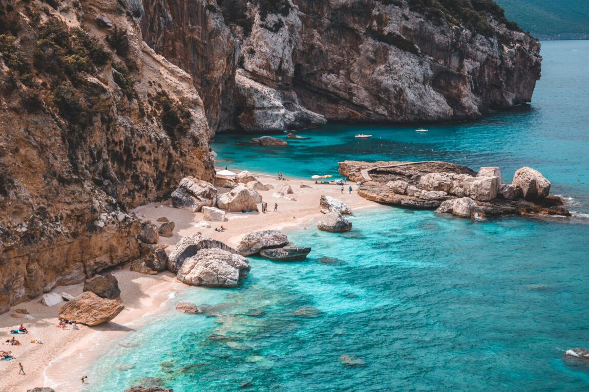
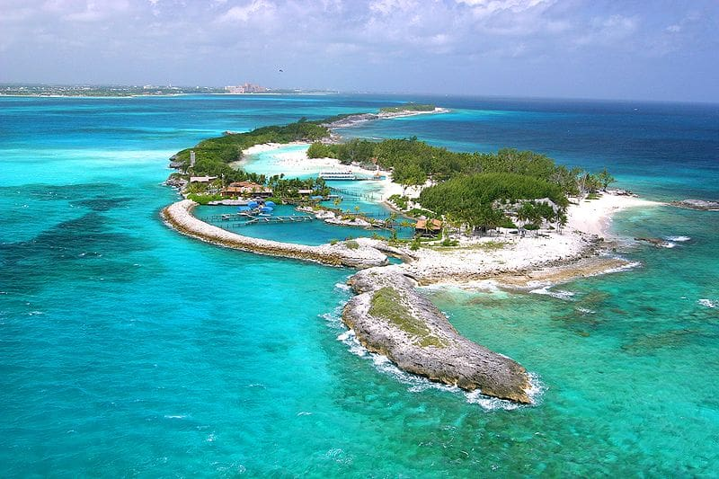
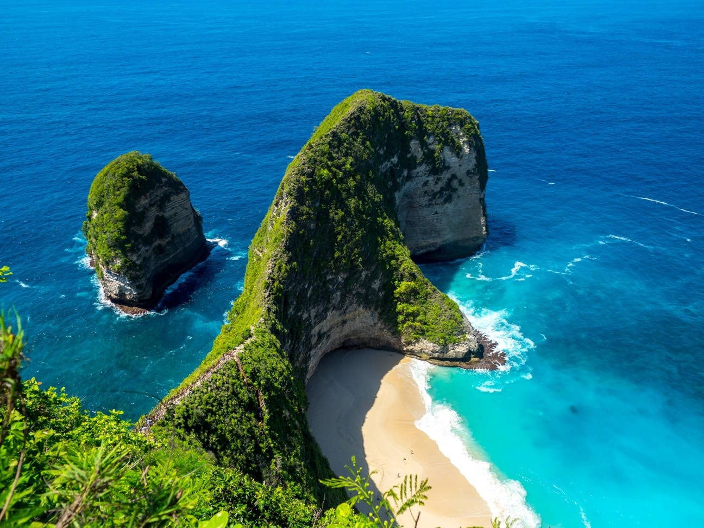

Roteiro de destinos
Riviera Francesa: Glamour e Beleza à Beira-Mar
Descubra o charme incomparável da Riviera Francesa a bordo de um dos nossos iates de luxo. De Mônaco a Saint-Tropez, passando por Cannes e Nice, cada parada revela cenários deslumbrantes, mar azul-turquesa e uma atmosfera de puro glamour. Com a Luxo Aluguel de Iates, você vivencia esse destino icônico com total conforto, exclusividade e liberdade para criar o roteiro dos seus sonhos. Navegue entre praias badaladas, vilas costeiras encantadoras e restaurantes renomados, com o Mediterrâneo como pano de fundo de uma experiência inesquecível.
Sardenha, Itália: Um Paraíso Mediterrâneo para Navegar
Explore as águas cristalinas e as paisagens selvagens da Sardenha com o conforto e a exclusividade de um iate de luxo. De praias intocadas a enseadas escondidas, este destino italiano encanta com sua beleza natural, cultura vibrante e culinária irresistível. Com a Luxo Aluguel de Iates, você vivencia a Sardenha de forma única, ancorando em lugares paradisíacos como La Maddalena, Costa Esmeralda e Cala Luna. Um cenário perfeito para relaxar, mergulhar ou simplesmente apreciar o melhor do Mediterrâneo com sofisticação e liberdade.
Palaiokastritsa, Grécia: Beleza Exuberante e Misticismo Grego
Ancore em Palaiokastritsa, um dos tesouros escondidos da ilha de Corfu, e descubra águas azul-esmeralda, cavernas secretas e falésias impressionantes. Com a Luxo Aluguel de Iates, sua experiência neste paraíso grego é elevada ao máximo conforto e exclusividade. Navegue por enseadas intocadas, mergulhe em águas cristalinas e desfrute de um cenário que mistura natureza exuberante e charme mediterrâneo em cada detalhe
Ibiza, Espanha: Festa, Beleza e Exclusividade no Mediterrâneo
Conhecida por suas festas lendárias e praias deslumbrantes, Ibiza é o destino perfeito para quem busca luxo, diversão e paisagens inesquecíveis. Com a Luxo Aluguel de Iates, você descobre o melhor da ilha com liberdade total. De calas isoladas e águas cristalinas a beach clubs sofisticados e pores do sol inesquecíveis, cada momento a bordo é uma celebração do estilo mediterrâneo com todo o conforto e requinte que você merece.

Maldivas: Um Refúgio de Luxo em Meio ao Oceano Índico

Viva o sonho tropical das Maldivas a bordo de um iate de luxo, navegando por águas azul-turquesa, recifes de corais e ilhas privativas cercadas por uma natureza exuberante. Com a Luxo Aluguel de Iates, você explora esse paraíso de forma exclusiva e inesquecível. Mergulhe com mantas e golfinhos, relaxe em praias intocadas e aproveite o pôr do sol sobre o mar em um cenário de pura serenidade, conforto e sofisticação.
Bahamas, Atlântico Norte: Paraíso Tropical e Aventuras Exclusivas
Explore as águas cristalinas e as praias de areia branca das Bahamas, um destino icônico no Atlântico Norte que combina beleza natural e luxo incomparável. Com a Luxo Aluguel de Iates, navegue por ilhas paradisíacas, descubra recifes coloridos e desfrute de atividades exclusivas como mergulho, pesca esportiva e festas privadas a bordo. Cada momento nas Bahamas é uma celebração da liberdade, conforto e elegância em alto-mar.
Ko Nang Yuan, Tailândia: Joia Escondida do Mar de Andaman
Descubra a beleza única de Ko Nang Yuan, um arquipélago paradisíaco famoso por suas praias de areia branca e águas cristalinas que revelam um rico mundo submarino. Com a Luxo Aluguel de Iates, navegue com conforto e exclusividade até esse refúgio tailandês, onde você pode relaxar em enseadas isoladas, explorar recifes de corais e desfrutar de paisagens naturais de tirar o fôlego, tudo isso com o luxo e a liberdade que só um iate pode oferecer.
Nusa Penida, Indonésia: Natureza Selvagem e Mar Esmeralda
Explore as belezas intocadas de Nusa Penida, uma ilha vibrante cercada por águas cristalinas e paisagens dramáticas que encantam aventureiros e amantes da natureza. Com a Luxo Aluguel de Iates, navegue com exclusividade e conforto por esse paraíso indonésio, descobrindo praias isoladas, formações rochosas impressionantes e recifes perfeitos para mergulho e snorkeling. Uma experiência única de liberdade e luxo em meio à natureza selvagem.
